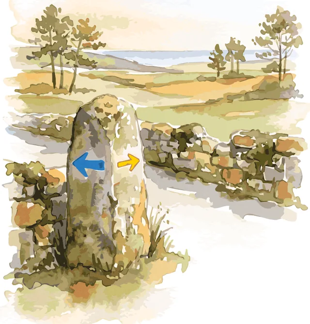
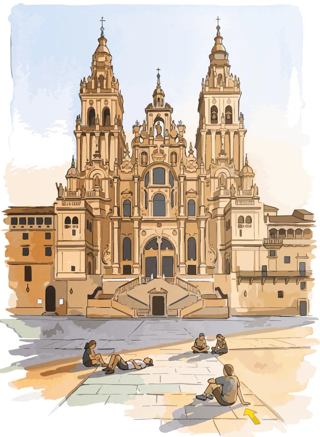

Portuguese Coastal Way · From Porto to Santiago
Behind the
Yellow Arrows
Lo que esconden las flechas amarillas
Behind every yellow arrow there is something nobody tells you.
Detrás de cada flecha amarilla hay algo que nadie te cuenta.
A pocket book, illustrated in watercolour, with 25 places on the Way told in Spanish and English.
2026 edition · Price to be confirmed

The book
What the arrow points to but never explains
Yellow arrows tell pilgrims where to go, but not what is around them. This book tells one small thing about 25 places on the Portuguese Coastal Way, from Porto to Santiago: a stone, a legend, a dish.
It is not a practical guide. It gives no distances and no hostels. It is a book to carry in your pocket and read when you stop, and to keep when you get home.
Why it works
Pocket size
A6 and light. It fits in the backpack of someone who already carries enough.
Bilingual
Every text in Spanish with simple English below, written for pilgrims from any country.
Painted by hand
One watercolour for each place, with a yellow arrow hidden in every one.
A keepsake of the Way
Read along the route, then kept as a gift or a memory once it is over.
A sample
What it looks like inside
Each place has a double page, with the illustration on the left and its story on the right.






Contents
Four acts, from Porto to Santiago
The book follows the Way in the order you walk it. It also has four theme pages and an epilogue.
Act I
Porto and the Minho
- Porto
- Matosinhos
- Vila do Conde
- Esposende
- Viana do Castelo
- Âncora
- Moledo
- Caminha
Act II
Galician lands
- A Guarda
- Oia
- Baiona
- Nigrán
- Vigo
- Redondela
- Arcade
Act III
The Rías Baixas
- Pontevedra
- Combarro
- Barro
- Caldas de Reis
- Valga
- Pontecesures
Act IV
The final kilometres
- Padrón
- A Escravitude
- Milladoiro
- Santiago de Compostela
Introduction The yellow arrow and the blue arrows
Themes Food, weather, nature and architecture
Epilogue Fisterra, a little further
Book details
- Title
- Behind the Yellow Arrows
- Spanish title
- Lo que esconden las flechas amarillas
- Text and illustrations
- Aldara Álvarez González
- Languages
- Spanish and English
- Pages
- 84, in colour
- Format
- A6, 105 × 148 mm
- Edition
- 2026
- Price
- To be confirmed
For bookshops and shops
A book for the counter on the Camino
Made for bookshops, gift shops, hostels and information points along the Portuguese Way and in Santiago.
- Small format, easy to display by the till.
- Pocket price, within reach of an impulse buy.
- Bilingual, for Spanish and international pilgrims alike.
- It talks about the places your customers walk through.
If you would like to stock it, write to us and we will tell you the terms.
Ask for information«This book began with a simple idea: to tell, between Porto and Santiago, everything a yellow arrow points to but never explains.»
Este libro nació de una idea sencilla: contar, entre Oporto y Santiago, todo lo que una flecha amarilla señala pero nunca explica.
The author
Aldara Álvarez González
Designer and illustrator from Baiona, on the Portuguese Coastal Way. She wrote, illustrated and designed the book.
See her workContact
Reserve a copy or ask for information
The book is about to be printed. Reserving does not commit you to anything: we will write to you with the price when it is ready.